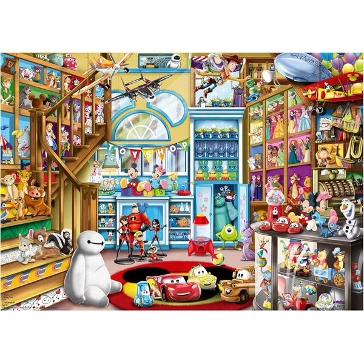

👶 10 años
Ravensburger Puzzle Disney 1000 Piezas
Un puzzle de 1000 piezas con los personajes icónicos de Disney, con la tecnología Soft-Click de Ravensburger para un encaje perfecto. Pensado para completar en varias sesiones.
⭐
¿Por qué nos gusta?
- ✔1000 piezas con personajes clásicos de Disney.
- ✔Encaje preciso gracias a Soft-Click.
- ✔Ideal para exhibir enmarcado una vez montado.
💬
Lo que más destacan las familias
Entre los comentarios más habituales aparece lo satisfactorio que resulta completar un puzzle de esta envergadura en familia. La calidad del cartón y el encaje de las piezas se valora especialmente frente a otras marcas.